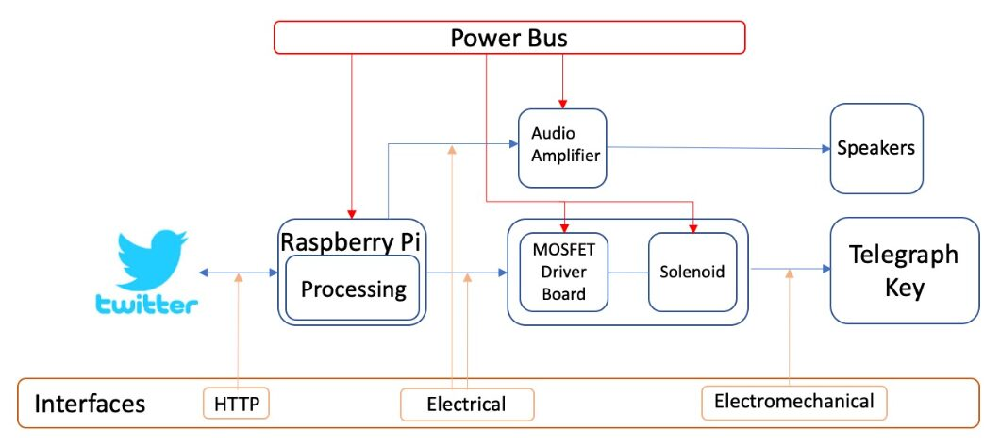
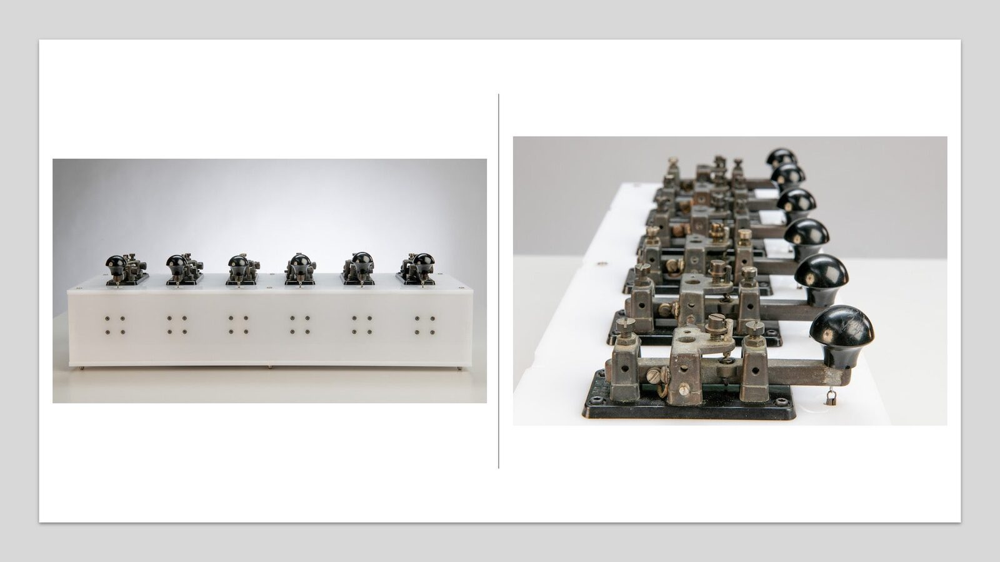
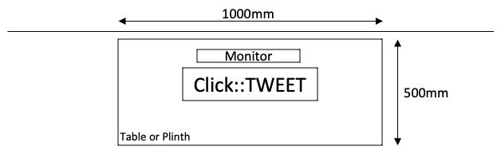
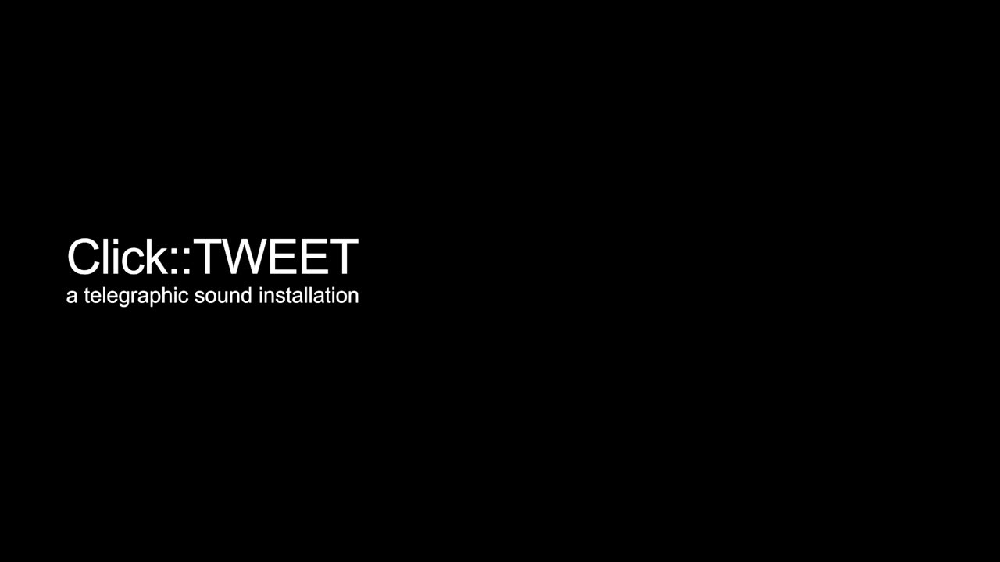

Click::TWEET. A Telegraphic Sound Installation
Abstract
The representations that real-time, always-on, data-driven technologies will enhance society like never before promotes an historical inattention that ignores the entangled genealogy of contemporary social media. Within a media archaeological context, this work presents Twitter and the telegraph as related forms of social media. Click::TWEET, a sound installation utilising obsolete media technology, is presented as an audio-visual representation of a genealogy of connections between past media technologies and contemporary social media. Click::TWEET can be considered a return to the material representation of media through the physical re-presentation of Twitter messages transported as invisible digital media through the physical materiality of the telegraph key. By enabling the ability to hear the present through the past, Click::TWEET reconfigures the existence of the telegraph within a broader history of social media.
Project Description
What happens when we slow down the present through the past? What emerges when the discrete strings of information of Twitter meet a forgotten ancestor? Click::TWEET represents two distinctly different temporalities of media; how they record and represent their own existence at their own speed, in their own code. The work aims to shift our focus from the real-time data streams of Twitter to a slower past that has laid a foundation for contemporary social media and continues to be alive in some form in that media. Click::TWEET is developed as a return to the material representation of media through the physical re-presentation of Twitter messages transported as invisible digital media through the physical materiality of the telegraph key. By re-engaging the material analogue world in tandem with the digital it can be considered a return to the tactility of pre-digital media.
The ideation and realisation of Click::TWEET has been informed by characteristic similarities between Twitter, the telegraph and Morse code. Their different material and lexical features have been utilised in creating a sound installation that re-presents the interwoven temporalities between these technologies. Similar to how an operator listened to the audible pulses as a symbolic proxy of words, Click::TWEET’s near erasure of the semantic meaning of the tweet focuses an audience’s listening on the indexical level of the telegraph as a series of rhythmic pulses.
Utilising social media and obsolete objects, Click::TWEET uses telegraph keys to replay a series of Twitter messages as Morse encoded telegraphic messages, whereby creating a presence of past media alongside contemporary media technologies. Playing the messages in this way, the work re-presents what some might consider one noisy medium (Twitter feeds) through another (key clicks), in creating a presence of telegraphic communication within the contemporary realm of social media. As such, the work is an audio-visual representation of a genealogy of connections between past media technologies and contemporary social media.
Click::TWEET foregrounds a line of six obsolete telegraph keys that sit atop a plinth as the primary sound objects in the work. Using the International Telecommunication Union recommendation for International Morse code provides six Morse elements (dots and dashes) to construct the character representations. Using this character set allows an extended range of symbols used in Twitter messages to be encoded, especially non-alphanumeric symbols prevalent in Twitter messages. Click::TWEET’s use of six telegraph keys is directly related to the maximum number of Morse elements in the character set being used. For a composition that uses a one to one relationship between Morse elements and telegraph keys, this allows the maximum number of elements to be represented across the keys.
Each telegraph key has been electromechanically prepared to operate by actuating a dampened solenoid. Each solenoid is powered and controlled by a custom-made circuit board that receives input signals from a microcontroller (a Raspberry Pi) to programmatically control each solenoid. The microcontroller runs custom code, developed using Processing 3, to connect to Twitter via the Internet. Click::TWEET has two operational modes that provide the ability to listen for and process live tweets or to extract tweets from Twitter’s message archive. The keyword phrase “What hath God wrought?”, use din the video documentation, is used to acknowledge the first Morse coded transmission between distant locations in 1844. The live streaming service continuously listens for messages containing keywords or phrases. This mode allows an audience to send tweets containing the keyword or phrase and have the message replayed by Click::TWEET. An archive mode queries and extracts tweets from Twitter’s message archive and stores these in a data table. If no keyword is specified, a random selection of messages is returned. A message is selected, transformed from alphanumeric symbols to Morse elements and translated to digital pulses that, via the solenoids, actuate a telegraph key. Through each ‘signalling’ cycle, Click::TWEET reconnects to Twitter to query and extract messages from Twitters message archive ensuring a near realtime currency to the replayed messages.


Click::TWEET System Overview
Click::TWEET presents Morse-encoded tweets within a compositional framework based on Henri Lefebvre’s rhythmanalysis. Lefebvre’s Rhythmanalysis is comprised of a variety of rhythms that coexist and clash. These he categorises as eurhythmia, polyrhythmia and arrhythmia. Eurhythmia is considered to be the smooth combination of rhythms in equilibrium. Polyrhythmia is composed of diverse rhythms that, at times, interact to maintain a symbiosis but at times clash as relational forces of contradictions and resistance to maintain a harmonious relationship. Arrhythmia is the state of discordant rhythms, rhythms that break apart in a divergence of time and space. [1] Accordingly, Lefebvre contends that rhythm embraces both cyclic and linear forms of repetition, as “rhythmed times and brutal repetition” in tension and opposition to each other. [2] Alongside a linear rhythm, the recursive loops of cyclical rhythms creates an emergent interaction of repetition, rupture, and resumption. [3] Within this framework, three expressive forms of message replay are conceived.
Each of Click::TWEET’s rhythmic forms are titled after Lefebvre’s characterisation of Rhythmanalysis. Eurhythmia considers each Morse encoded character as a discreet and fleeting rhythmic pattern. In this way, each space between characters and words is a disruption to a pattern that may be resolved by the emergence of a new pattern. Eurhythmia translates the message’s individual characters into their equivalent Morse code and replays each character’s Morse elements sequentially across the keys. Six telegraph keys allow for the maximum character elements in Click::TWEET’s Morse code character set to be represented in the work. Polyrhythmia plays a different message on each key. This mode exhibits moments of synchronisation, syncopation, and disturbance through the threading of the messages’ rhythmic patterns. The very machine-like rhythmic structures are more evident in this compositional form. With the completion of each message and the resting of the associated key, the more machine-like rhythmic patterns give way to syncopated rhythms. As further messages are completed, the rhythmic patterns become more synchronised until, finally, a single key completes its transmission. Arrhythmia appears similar to Polyrhythmia. Arrhythmia is a form of pattern disruption. Based on Myron Wish’s mid-1960s research on signal confusability in Morse code it varyies the silent intervals between each adjacent pair of tones within each character. [4] Instead of each silent interval conforming to Morse code’s single time unit, Wish used either single unit (dot) or three unit (dash) intervals. As such, Arrhythmia disrupts Morse code’s signalling process by randomly changing the timing of the space elements used between each individual character from a dot length to be either a dot or dash length. Not only do the individual characters lose their semantic meaning but Morse code’s temporal logic is disrupted as the dash length space blurs the boundary between characters. Examples of each rhythmic form are shown in the associated media links.
Morse code is a text-based communication medium. As such, the rich content able to be included in a tweet cannot be represented by Morse code. Emojis, video and some text characters are not able to be played by Click::TWEET. Therefore, each message’s content is reduced to its base Morse elements by removing symbols that are not represented in the Morse system. Both Twitter and telegraphic communication havereceived criticism for their brevity, threatening longer and more elaborate forms of communication, and contributing to a general dumbing down of society through the “impoverishment of grammar, vocabulary, spelling and so on.” [5] Click::TWEET’s need to “dumb down” Twitter’s messages can be perceived as being situated within the moral decline of communication that both technologies have been accused. Additional audio-visual cues are provided by a sine tone and video projection. A sine tone waits for a signal to disrupt its presence. The “always-on” of the telegraph circuit waits for an “always-on” social media. The use of the sine tone, based around the frequency of wireless telegraphic transmission, provides a further aural connection to the visual movement of the telegraph keys and the inherent rhythm of the replayed message. The associated video presentation reinforces the near erasure of the semantic meaning of the tweet by presenting them as individual characters (Eurhythmia) or as individual words (Polyrhythmia, Arrhythmia).


Click::TWEET
Installation Notes
The video accompanying the work can be provided on a large screen television of with a projector. The best installation option is to use a televsion as this is the bst visual result. However, if a televsion cannot be made available, I can provide a video projector. The proposed layout with the video projector is shown in Image 3.
Installation Requirements
Setup time : 1 hour
There are no special access requirements to set up the installation. The following are a list of installation requirements from the conference organisers.
Table I. Equipment Requirements | |
|---|---|
Table or plinth approx. 9000-1000mm(W) x 300-500mm(D), approx. 900-1200mm high | Organization |
Power outlet and extension lead | Organization |
Stable Wi-Fi Internet connection | Organization |


Proposed Layout
Media

▶Click::TWEET Video Presentation
Feasibility
Click::TWEET is constructed as a self-contained work and, as such, only needs the logistical requirements noted above. I have implemented and exhibited similar work as shown below.
Nov. 2016 | Resonance. Dowse Art Gallery, Lower Hutt, NZ Tapeworm (Electro-mechanical Performance) |
Nov. 2016 | VUW Creativity Week. Victoria University, Wellington, NZ Tapeworm (Electro-mechanical Performance) |
Aug. 2017 | Sonic Arts Expo. Victoria University, Wellington, NZ Click::Bit (Electro-mechanical Performance) |
Oct. 2017 | Composers Competition. Adam Concert Room, Wellington NZ Click::Byte (Electro-mechanical Performance) |
May 2019 | Pyramid Power Festival. Pyramid Club, Wellington, NZ Click::RAND (Installation) |
May 2019 | Science & Technology Expo. Lower Hutt, NZ Click::RAND (Installation) |
Nov. 2020 | Tuning in the Pandemic - Music Conference. Massey University, Wellington NZ Click::TWEET (Installation) Click::RAND#2 (2x Installations) |
Citations
S. Miyazaki, “AlgoRHYTHMS Everywhere: A Heuristic Approach to Everyday Technologies,” in Off Beat: Pluralizing Rhythm, J. H. Hoogstad and B. Stougaard Pedersen, Eds. Brill | Rodopi, 2013, pp. 135–148.
↩H. Lefebvre, Rhythmanalysis: Space Time and Everyday Life, English Translation. London: Continuum, 2004.
↩D. Lyon, What is Rhythmanalysis? Bloomsbury Academic, 2019.
↩M. Wish, “A STRUCTURAL THEORY FOR THE PERCEPTION OF MORSE CODE SIGNALS AND RELATED RHYTHMIC PATTERNS,” p. 97.
↩B. Winston, “Media Technology and Society - A History: From the Telegraph to the Internet,” p. 389.
↩